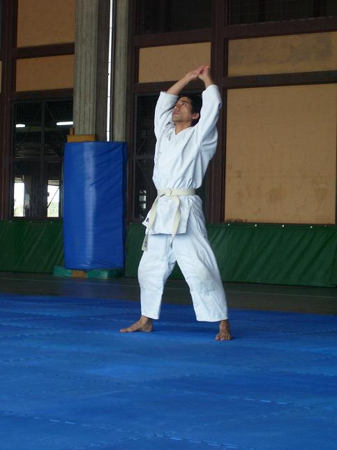

| INICIO | CLASES | TÉCNICAS | VIDEOS | SALUD | SEMINARIO | ORGANIZACIONES | HISTORIA | TEXTOS | BIBLIOGRAFÍA | LINKS |

Práctica de Kenko Taiso
Hitori Waza
Son técnicas de Ki Aikido completas o parciales, hechas por uno mismo (sin el compañero). Su objetivo es obtener una mayor conciencia de los movimientos logrando de este modo precisión cuando existe contacto con el atacante. Los exámenes desde 5º a 1er kyu contienen este tipo de práctica.
Es fundamental poder practicar por uno mismo, ya que el objetivo final no es arrojar al compañero. Uno debe ser capaz de lograr una mente que se ocupe de ubicarse en el lugar apropiado en cada movimiento, sin dejarse llevar por el fragor de la contienda y de este modo obtener, con el tiempo, una calma forma de pensar. Esto es la base de la disciplina pero debe ser entrenada con gran paciencia y compromiso.
Criterio de Exámen (Hitori Waza) según la Ki No Kenkyukai Association Internationale.
Setiembre 2012
5o Kyu
- Jo Kenko Taiso.
- Udefuri Undo.
- Udefuri Choyaku Undo.
-Tenkan Undo.
- Sayu Undo.
- Sayu Choyaku Undo.
- Ushiro Ukemi Undo.
- Zempo Kaiten Undo.
- Shikko (4 pasos adelante).
4o Kyu
- Jo Aiki Taiso:
- Funakogi Undo.
- Ikkyo Undo.
- Tenshin Undo.
- Zengo Undo.
- Happo Undo.
- Mae Ukemi & Ushiro Ukemi (3 de cada lado).
3er. Kyu
- Koteoroshi Undo.
- Sankyo Undo.
- Nikkyo Undo.
- Tekubi Kosa Undo.
- Hanmi - Gyaku Hanmi Undo.
- Ushirodori Undo.
- Ushiro Tekubidori Zenshin Undo.
- Ushiro Tekubidori Koshin Undo.
- Shikko (4 pasos atrás).
2o Kyu
Ejercicios de Bokken con una mano:
- Movimiento vertical.
- Shomenuchi.
- Movimiento horizontal.
- Cortando adelante horizontal con paso.
- Shikko (adelante - atrás - girando).
1er Kyu
Ejercicios de Bokken con una mano:
- Movimiento vertical (parte plana hacia arriba).
Ejercicios de Bokken con dos manos:
- Shomenuchi (8 cortes con kiai).
- Tenshin (corte a un lado y a otro).
- Tsuki (8 pasos delante - 8 detrás).
- Happo Giri.
- Jo 1.